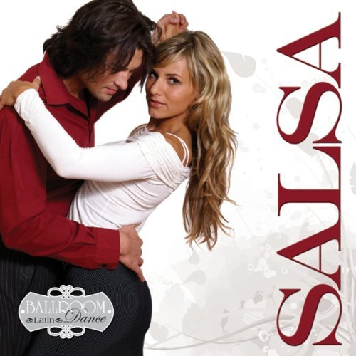
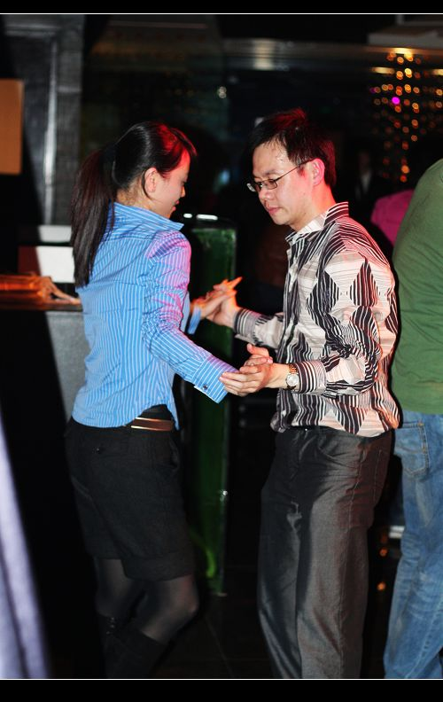
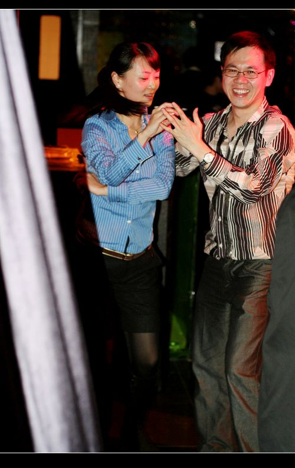
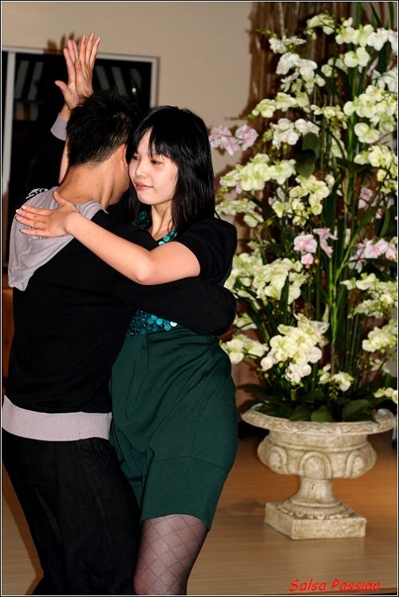
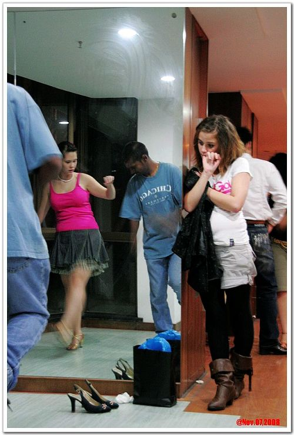
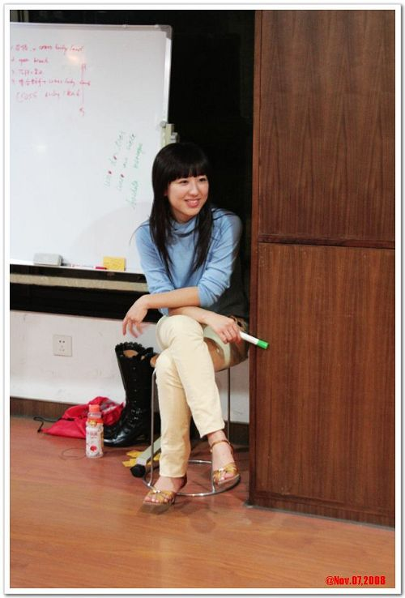
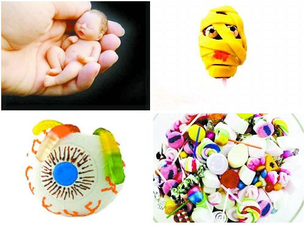
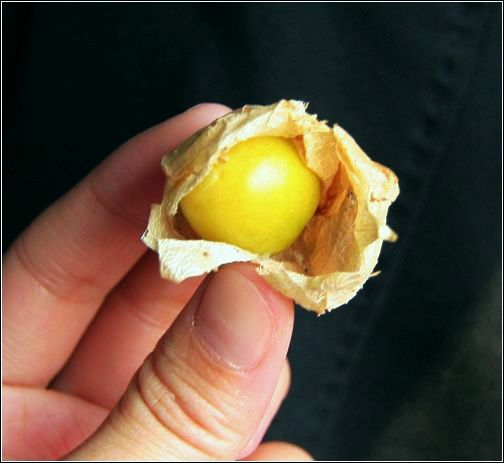

Archives : 2008-11
慵懒的下午 @ Nov 30, 2008
阳光照在阳台上的冬季，没有工作，没有家务，没有salsa，没有烦恼和压力，也没有喜悦，我和luke度过了一个慵懒的下午！

让我好好照顾你们！ @ Nov 28, 2008
用两天时间收拾衣服，累坏了。
因为挂衣服的空间有限，好些需要挂的衣服只能叠起来。
收拾时才发现去年买的体恤今年夏天没穿过，前年买的裙子去年没穿过...
习惯将香水喷洒在衣服上，以至于有的毛衣留下锈般的痕迹：（
居然有的毛料裙、毛衣上有微小的洞洞，天呐，这些衣服还没怎么穿过呢...
想起母亲会在梅雨季节结束后的酷暑天，晾晒冬天的衣物。虽然现在已经是冬天，也不能浪费大好的阳光，朝阳的房间和阳台上，只要白天光照的地方都挂上、铺满了衣服。
“不喜欢的衣服不要轻易丢掉，过段时间穿也许就合适了！”我妈妈以前对我这么说过，今天穿了4年前的毛料裙，当时觉得太紧、太女性化，出勤率不高。但是今天穿上感觉不错，所以对妈妈的话到最近才有共鸣！
衣服没有变化，人会一直变化的。服装潮流也总是反反复复轮回着，只要不买当时特别时尚的款式，买适合自己的，一般能使用好多年也不过时。辛苦地收拾完，真有些心疼那么破损的面料，让我好好照顾你们吧，衣服们！
淘碟 @ Nov 28, 2008
周三跑去淘SALSA的音乐碟，两张装的套碟是古巴风格，及一张非常传统古老的SALSA音乐，不喜欢。不过顺便淘到一张非常好听的电子！为了享受音质好的SALSA音乐，托在芝加哥的朋友购买了5张SALSA，和2张BACHATA，均为07、08年的精选，一共85美元。
昨天回家播放那两张盗版的古巴风格CD，穿上新买的拉丁舞鞋，拉着LUKE跳舞，他好象很兴奋的表情，一直张着嘴巴笑，我自个儿跳的时候，他在旁边也是手舞足蹈的，很有意思！这次买的拉丁舞鞋，全黑色，闪烁着缎子般光泽，令人爱不释手！
推荐一段SALSA舞的视频，挺喜欢这位女士的舞姿：Hot Salsa Dancing at Night Club in California
这是在美国购买的其中一张SALSA碟的封面。

就当理想去追求吧。 @ Nov 23, 2008
看望在妇幼保健医院开刀的朋友，她没说具体什么病，我也就没问，只知道肚子上开了四个孔，算是小手术，约一个月可康复。说在那里的病友都是苦命人，普遍过得不快乐，所以影响到内分泌而患有卵巢囊肿、子宫肌瘤等病，当然并不是患了这些疾病就一定是受情绪影响，也有个体体质差异。或者这只是外行人对于患病原因的猜测？另一个女性朋友，月经不调，以至于有些贫血.....这些疾病的名称我们都耳熟能详，平时会毫无感觉，可一旦自己熟悉的朋友亲历，感受才深刻起来。
这才感叹做女人真不容易，社会带给女性生理、心理上的各种困惑、压力，女性还要承担起家庭中重要的角色，如果没有父母帮忙，就得自己做家务带孩子，还要工作。要做到非常有条理的去安排生活，不是每位女性都具备的。相比之下，男人则以事业为中心，除此之外似乎没他们什么事？早晨太太要比所有人早起，做早饭，先生吃完上班去了，太太要收拾餐桌和碗筷，然后也急匆匆赶去上班，还没到午饭、晚饭时间，太太心里就琢磨起菜谱了，今天吃什么明天吃什么，什么时候买菜买哪些菜？离开家前别忘记将米淘好放进电饭煲，中午或晚上到家米饭烧好了，拿出前一天晚上炒好的菜、汤放进微波炉里加热。有孩子了肯定更忙，乱了手脚就是疲惫不堪。有些男同事到了下班时间没什么事也不急着回家，也会在电话里告诉太太是在加班......家里有女人在忙呢，回家吃现成的对于男人来讲天经地义，不是吗？这当然也不是绝对现象。电影《x档案》中有句台词：我不要回到家是黑暗陪伴，我要我们朝夕相伴。
习惯后会发现在琐碎中也有幸福，在家吃饭是多么幸福，买菜的过程是多么幸福，闻到晾晒衣服上的阳光味儿是多么幸福，工作之余在家里看电影听音乐、在阳台上与相爱的人晒冬季下午的太阳是多么幸福！今天在菜场遇到一对年轻男女在买菜，女生比较依赖男生的样子，男生有主见的买这个买那个，女生站在他身后帮忙拎菜贩递过来的蔬菜。一对中老年夫妻一起买菜并不会让人感到意外，因为如今年轻人都在作啃老族，而这对年轻的恋人也好夫妇也罢，买菜的画面着实令人温暖.......这是写言情小说吗？哪有事事顺心如意？那就当成理想去追求吧，能快乐的活在希望里好过得妇科病，不是吗？
今天看了部很不错的动画片《WALL.E》 ，WALL·E已经在地球上孤独地生活了七百年，他爱上了自己遇见的第一个机器人eva......2008年6月27日，这部电影在美国上映，在IMDB上，它的评分一度超过9.3分，在投票超过一万人后，它的评分是9.1分，成为电影史上影迷心中排名第9位的电影；在烂番茄网站上，它的好评率是罕见的96%，那些发表差评的人被“围攻”和质问“你们到底有没有去看这部电影”；在全美35家权威媒体的影评中，《Wall·E》被其中17家媒体给予100分的满分，平均分93；在票房方面，《Wall·E》击败了同一天上映的安吉丽娜朱莉的新片《Wanted》，仅仅一个周末就斩获6300万票房。 而中国电影局却没有引进这部电影，为什么？《wall.e》会让人对于环保产生更深刻的认识和思考，希望你会喜欢上这个承受末世孤独而又有些忧伤自得的小机器人wall.e。
小小的进步 @ Nov 22, 2008
连续两周下来，学了许多新动作。从别人拍下的照片上发现自己的上身开始有salsa的感觉了，尤其是第一张。为自己的进步感到高兴！
上课，老师问我：“有没有高跟鞋？”我说很少。
老师又问：“跳舞的高跟鞋呢？”
环顾四周，发现别的女同学都穿了跳拉丁的高跟鞋。
在舞动中因为没有高跟的作用好象是少了点什么......
下课后大家去“亨利之家”锻炼舞技，这才发现新街口有些大厦里的新店铺五颜六色，除了上salsa课、去超市，每天几乎是家、公司两点一线，平时也没觉得有什么异样，倒还很享受这份宁静。但是今天晚上看到繁华的市中心街景，觉得自己被这个城市抛弃了，亦或是我远离了尘嚣？


也许，我需要一把左轮手枪！ @ Nov 20, 2008
看完《MR 73 左轮枪》怎么也睡不着，接连两部法国片都在告诉观者“这就是生活”的本来面目，我是一个带入感很强的观者，看完之后躺在床上久久的难受。“上帝是个混蛋，总有一天我要杀了他。”路易说这话的时候，正是他忘却自己的时候。在中国普遍缺乏信仰的情况下，却没有上帝可以让我们咒骂。路易是一个被活埋的男人，一个绝望的人，一个活得精疲力竭的人，果真如此不如解脱了之。那把左轮手枪帮助他完成正义的使命，帮助他解脱心灵的苦海。也许，在某些时刻，我们人人都需要一把左轮手枪。
美国片，热热闹闹的、励志的....法国片相对平实细腻，大多重视人物心理刻划，不时给观众有惊有喜，法国影片的感情共鸣对于有更多生活经历和感受的人要来得要更强烈些。路易在整部影片中不是在抽烟就是在喝酒，心理波动时常常就是找酒买酒。我特别能理解那种感受，情绪就好象双手捧着一碗水，得仔细捧着，一不小心碗里的水有可能洒了，会沾染上灰尘，会蒸发，我们需要心灵的一个缺口，好把不好的东西倒出去。也许有的人不会通过烟酒，而是别的方式，这是否又涉及到“蝴蝶效应”一说？
无论怎样，我开始佩服活着的人，那得多勇敢，具有非凡的自控力才能活得快乐而自信？！
当然这里面不包括那些神经粗糙的“白纸”先生和女士。
海明威说：“一个人可以被毁灭，但不能被打败”。
这话用在电影《MR 73》的主人公路易身上，再恰当不过了。

且看“中国茶”上金庸人物。 @ Nov 19, 2008
我的测试结果是：蓝凤凰
五毒教主蓝凤凰，在书中出现的次数不多，但这个半裸苗女，每一次短暂的出现，都叫人喜爱莫名，她和“无行浪子”相携，并闯少林寺一场，更令人神为之夺。蓝凤凰是上上人物。
又寂寞又美丽 @ Nov 18, 2008
好了，周末臭美也臭美过了，照片也拍了，需要收收心了，现在工作完全不在状态，每天都不想上班，就想在家做做饭、听听音乐、看看电影、上上网。很高兴YC也这么想，这个嫁给比自己小7岁的女子，在我印象中一直是事业有成的形象，虽然不是倾城倾国，但漫溢的气质着实令人舒服。她和自己的先生谈了十几年恋爱，金融危机的时候结婚了。YC说她最希望的生活是早上想上班，下班的时候想回家...大多数时候我们都在违背自己的意愿生活着，象itsmin评价《Paris》那句“又寂寞又美丽”，再加上一个“又无奈”吧！
南京在一天之中就进入冬季了，单薄的被子上面加了一床花毯，早晨起来更是不知道穿什么好，这个季节的办公室是最冷的，什么时候空调才能开呢？我象冬季一样变得“冰冻”起来，除了上salsa课哪儿也没兴趣扎堆，昨晚ERIC的婚礼，虽然内心对这个瘦小的男同事心存温暖，但还是托人带了份子钱过去，祝福尽在不言中。就这么渐渐化繁为简在社交关系里，回想过去的自己，没自己什么屁事，也喜欢瞎凑热闹，生怕落下自己一个....多么可笑的一个傻大姐？！倒是越发享受现在的自己。
周末在家看了场电影:《地狱男爵II》，与现实生活相结合的神话是我最着迷的，里面那条人鱼的爱情伴随着歌曲:“I can't smile without you ”久久回荡在我的心中，好看又好听，在需要轻松快乐的时候不妨看看这部电影。前天晚上吃了火锅，引来夜晚无数的噩梦，今天晚上我要看《功夫熊猫》，会不会梦见许多有趣的卡通呢？
You know I can't smile without you
I can't smile without you
I can't laugh and I can't sing
I'm finding it hard to do anything
you see I feel sad when you're sad
I feel glad when you're glad
if you only knew what I'm going through
I just can't smile without you
you came along just like a song
and brighten my day
who would of believed that you where part of a dream
now it all seems light years away
and now you know I can't smile without you
I can't smile without you
I can't laugh and I can't sing
I'm finding it hard to do anything
you see I feel sad when your sad
I feel glad when you're glad
if you only knew what I'm going through
I just can't smile
now some people say happiness takes so very long to find
well, I'm finding it hard leaving your love behind me
and you see I can't smile without you
I can't smile without you
I can't laugh and I can't sing
I'm finding it hard to do anything
you see I feel glad when you're glad
I feel sad when you're sad
if you only knew what I'm going through
I just can't smile without you
Shadow Side of Me @ Nov 18, 2008
歌曲:Shadow Side of Me.mp3
歌手:Michael Learns To Rock(迈克学摇滚)
专辑：Eternity
发行日期：2008-10-27

I feel your existence in your body
Though you try to hide it
I know there's a battle in your mind
I'm feeling the distance you are drifting
And I just can't fight it
How do we go on like this
Putting everything at risk
Hard to live
With the shadow side of me
You need what I can be
Holding on
To a *** each other man
If you're looking fot perfection
That is not the way I am
You say that you love me
But the future is too hard to promise
It's making no sense to my head
I know there's a dark side of my spirit
where you just can't find me
There is not a sending here
just a time so who cares
Hard to live
With the shadow side of me
You need what I can be
Holding on
To a *** each other man
If you're looking for perfection
That is not the way
Hard to live
With the shadow side of me
银杏叶子的季节（二） @ Nov 17, 2008
不知道是不是因为相机的缘故，朋友说没怎么P过原图，但我总觉得景深、人像真实性和期待的不同，当然无论如何都比我自己拍自己强百倍。长这么大还是第一次拍这种所谓的“写真照”，虽然从摄影到模特都是业余爱好者，呵呵~因为自己喜欢摄影，可能对于图片的要求比较高，希望拿到原图后重新尝试一下编辑。非常感谢这位友人的拍摄，希望以后还有机会相互交流摄影！
照片没有完全上传，现在是弄一些传一些，******更多照片******


银杏叶子的季节（一） @ Nov 16, 2008
银杏叶子黄了的季节，记忆中只有去年11月没有去东郊。今年补上。大多数人在这个季节会去看栖霞枫叶，而我更愿意去看银杏叶灿烂的金黄，南京还有什么地方比无梁殿那里的银杏树高大、繁茂、灿烂呢？
遗憾天公不作美，没有期待中的下午阳光，但有许多跳舞中拍摄下的PP，很喜欢，会慢慢上传到“茶”上，也算是补偿。


*Salsa* Passion @ Nov 11, 2008
理照片的时候发现salsa老学员在舞动过程中的表情大部分时候都表现得很好，想来寻找“美”也是需要过程的，不是吗？
当我们还是salsa初学水平时，光顾着学动作记动作，这一切忙完才会考虑到如何让形体表达的更完美，之后是不是才会照顾到面部表情？！
理照片时还发现跳salsa时间长的同学，很会穿着打扮，一个知道如何表达形体美的人，才会懂得如何穿出适合自己得气质来？！再仔细观察一下女孩子的手形....以前我学习舞蹈的时候，老师总强调让感觉延伸到手指尖。无论做什么事情........细节永远起了关键性的作用，舞蹈更是，缺那么一点，效果差了很多。
那么，我们不仅是在学习salsa，同时也在学习如何表达美！salsa似乎不象专业舞蹈那么挑人，年龄跨度大，从十几岁到六十岁，只要体力尚可，一个月的学习便可以基本掌握简单的舞步，的确比起健身操、机械健身要有趣得多！对平时的生活工作压力也是不错的释放方式！
MORE PIX HERE：salsa passion(这是近期我拍摄下的画面)， salsa before(这是salsa班级以前部分活动的照片，我收集到相册里了。)



奥巴马不为人知的中国亲缘 @ Nov 09, 2008
全名：巴拉克•胡赛因•奥巴马（小）（barack hussein obama jr.）
（台湾地区译为欧巴马）
党派：民主党
公职：伊利诺伊州联邦参议员（2004年首次当选）
伊利诺伊州州参议员（1997-2004）
职业背景：1993-2004，miner barnhill & galland
律师事务所律师（伊利诺伊州芝加哥）
生日：1961年8月4日
出生地：夏威夷檀香山
居住地：伊利诺伊州芝加哥市
教育背景：
1983年获哥伦比亚大学文学学士学位
1991年获哈佛大学法学院法学博士学位
婚姻状况：1992年结婚，育有二女
宗教信仰：联合基督教会
奥巴马出生在美国夏威夷，
父亲是一位来自肯尼亚的留学生，
母亲是美国堪萨斯州的白人。
奥巴马先后毕业于哥伦比亚大学和哈佛大学，
于1996年首次当选为伊利诺伊州参议员，
2004年在伊利诺伊州首次当选为国会参议员，
成为美国国会历史上的第5位、
本届国会中唯一一位黑人参议员。
并在北京时间2008年11月5日
当选为新一届的美国总统,
也是美国历史上第一位黑人总统.
在2004年7月，
民主党召开全国代表大会，
奥巴马被指定在第二天做“基调演讲”。
所谓“基调演讲”，
就是民主党人阐述本党的纲领和政策宣言，
通常由本党极有前途的政治新星来发表，
1988年做“基调演讲”的人就是时任阿肯色州州长的克林顿。
奥巴马不负众望，
他亲自撰写演讲稿，
并发表了慷慨激昂的演说。
在演说中他提出消除党派分歧和种族分歧、实现“一个美国”的梦想。
45岁的奥巴马演说极具魅力，
灿烂的笑容更虏获许多民众的心。
与过去有意竞选总统的黑人前辈相比，
奥巴马是首位在初选前民调获得全国性支持的明日之星，
打败2008年民主党总统候选人的热门人选之一的希拉里，
成为民主党总统竞选人。
奥巴马在短短两年多的时间里就已在政坛造成一股旋风，
甚至有人把“奥巴马现象”拿来
与前总统肯尼迪1960年挟带强大人气进军白宫来相提并论。
不过也有许多黑人表示
对于奥巴马并没有认同感，
评论家也认为竞选总统
他还稍嫌太嫩，
奥巴马需要努力的空间仍然不小。
几周前我在肯尼亚西部的时候，有一次我坐在一棵芒果树下休息，参议员奥巴马同父异母的姐姐欧玛告诉我说，“我女儿的父亲是英国人，我的舅舅娶了一位俄罗斯女人，我还有一个兄弟在中国，与一个中国女人订了婚。”我猜欧玛口中提到的她生活在中国的同父异母兄弟应该是马克。马克是......
salsa weekend @ Nov 08, 2008
昨天晚上大家上完课去宝莱纳salsa实践，结束后彼此告别。
出车库时，有位男士慢腾腾地说道：“全是‘艾坶艾坶’哦。”
是的，全是MM，而且全是漂亮的艾坶艾坶，男士稀缺，所以都是美女们排着队等着和男同学跳一支舞的。
more pix here：salsa classand salsa party
我们班年龄最大的“拉登”同学，快50岁了，一点肚子也没有。

镜子里的家伙在培养自己的舞伴，一个月过去了，进步好象不大哦。

这位同学学习salsa两个月，跳得不错。最近才知道她因为对salsa的兴趣还学习了西班牙语，令人刮目相看。

初学者的认真态度是我们学习的榜样。

在教育厅工作的婷婷，认真地在看同学们练习。

最右边穿短裙的女同学也是初学者，目前还处于启蒙阶段，不过我相信态度决定一切，以她认真的学习态度，一定会进步很快。

帅哥美女搭配总是很抢眼，更何况还是个苏州美女。

课后集体照。

你感觉到金融危机了吗? @ Nov 07, 2008
南方报业新闻报道，2008秋季跨国公司忙着裁员，近日一份列举了22家跨国企业、40家国内大中型企业、116家国内中小型企业的“大裁员第一波”企业名单，正通过各大公司的企业邮箱在上海、北京、深圳等地的白领中传播。
美国金融危机直接影响到国内出口企业，一些厂家从出口经营转向国内市场，美国金融危机真的会蝴蝶效应到中国卖废品的老太太，原先一只大的可乐塑料瓶卖1毛钱，现在只能卖8分。也许价格不确切，没卖过，总之卖废品的价格低了。我倒觉得商场里的东西贵了，但是频繁收到德基、金鹰和东方的打折促销信息。有新闻说西方发达国家的人民尽量到超市买打折品，奢侈品降价，有些甚至快给孩子交不起学费了......每天广播必有N条与金融危机相关的报道，奇怪的是我却没有感觉到？不过最近公司的定单是少了。
除了具体列明的“裁员企业”名单，该邮件还评价了经济不景气的形势下，20个行业的“不景气指数”和6个行业的“景气指数”。被划入不景气行业的有网络/游戏、IT外包、出口贸易、半导体、服装/纺织、钢材、汽车、房产、室内设计/装潢、建筑设计、宾馆/酒店、粗加工制造、广告、娱乐、猎头中介、货代行业、图书出版、航空、造纸和木材等。
一篇“金融危机十项注意”的帖子在各大网站上传播，11项内容，分别是：不要辞职，不要换工作，不要转行，不要创业；多备份几个自己可以去的公司职位；不主动要求老板涨工资，裁员往往从工资高的裁起等等。
来自amen的图片 @ Nov 06, 2008
用amen的话讲：“他认识我有5年多了，我认识他有2年。”从未谋面，他是通过他的一个女同事介绍给他看中国茶的。我是他初用MSN仅有的几个联系人之一。这么一说，好像历史悠久了.....
最最巧的是，他们公司现在居然搬到我们公司对面，和SALSA班上的一个女同学是同事，那位同学是金华人，但却一口地道的台湾腔，每次听她说话我都有点晕，大陆讲话的节奏和台湾节奏配合不起来，有没有发现？问起amen，才得知是资深工程师哦~喜欢他拍摄的东西，丰满，摄人心魄，依稀记得他拍摄美国的一组照片被《东方文化周刊》使用了。

买书 @ Nov 06, 2008
这一周我已经可以有条不紊地从早饭做到晚饭，前提是必须在周末采购好下周的生菜。这周第一次将红烧小排做的很成功，既不烂又不生硬，咀嚼时有胶汁，口感真正好。昨天在家吃过晚饭，去新街口的新华书店买书。忘记上一次逛书店是什么时候了，也许几年前？
顾客没有记忆中那么多，稀稀拉拉地散落在货架四周，店员穿了统一的藏青色西服套装，不张口时觉得还蛮职业，一张口全是老南京话，一个店员拿着吃过饭的勺子问肥皂在哪儿......整理货架的店员立马放开清亮的嗓门说道：“我累死了（窝类死喽），多少书呀（叨扫书讹）.....”另外几个店员不知道从什么地方兴致昂然地钻出来，异常安静的书店忽然变成菜场里闲聊的场面。新华书店从经营到形象改变很多，连里面的空气都清新了，然而老国营企业陈旧而熟悉的东西还保存于无形之中，店员的眼神里已找不到青春的影子，询问两三遍，柜台下的面孔这才拖沓着扬起眉毛，将我一天的好心情压得死气沉沉。没到9点书店的广播开始催顾客离开，而西面邻近的一楼大众书局要到晚上12点才关门。从新华书店出来，那些麻木机械的妇女面孔久久挥之不去，生活在她们的脸上留下深深的烙印......我一边走一边想：这不是我要的中年表情！
我要买的两本书新华书店没有进，却买了本计划外的《抑郁》，它和它系列里的书被放在哲学货架上，也许属心理学范畴更合适些？买《抑郁》最大的原因是好奇，我想看看别人怎么抑郁的，抑郁又是如何被理性而科学分析的。当郁闷的频率越来越少时，得以给我更多的空间去理性接受这种状态，并能柔和地过渡到平和中去。偶尔郁闷未必是不好的，不然怎么能衬托出快乐的精彩？学习掌控并消解不良情绪，对我们的生活是何等重要的事。
你知道他在说什么吗？ @ Nov 05, 2008
这是老外学习中文的笔记，可以肯定的是这个人“音译”记录中文发音的：
Dear Tim,
shall by too dull doll by too jack won,
dolphin long can Jim shall by too low,
shall by too when dull low, doll car low,
dolphin long doll Ham Eason
“more power!”
《Paris》，抱怨&陶醉。 @ Nov 04, 2008
特地开了jiajialing去年回国送给我的DE BORTOLI2001年YARRA VALLEY SHIRAZ葡萄酒，看完电影，大半杯下肚，酒不醉人人自醉。

是的，巴黎这两个字已经足够让人着迷，《Paris》将生活放缓行进，被放大了的生活细节，如人像定焦镜头下的人物，有没有发现微拍的景物总是很能打动人？这部电影正是这样。活着的人焦虑，即将死去的人留恋。生活其实并不美好，生活就象空气一样被人们熟悉以至于忽略，通过《Paris》你又会发现生活其实是那么的美好！看着、笑着、心里却隐隐地难过着。电影通过姐姐和弟弟，暗恋学生的教授，偷渡的北非人，售卖水果蔬菜和海鲜的人群来展示在巴黎生活的人们，那些生活内容和我们周围发生的故事一样平凡，就象我们的生活一样充满着欢笑和忧伤！我们可曾沉浸下来去感受生活的动容之处？亦或是只能毫无知觉的如机器般度过生命中的一天又一天。
女主角朱丽叶.比诺什饰演一名义工，她遭遇了不幸的爱情，弟弟又患上绝症。于是姐姐搬来照顾弟弟，表现出女性面对困境勇于挑战的勇气。(惊喜地发现姐姐为弟弟安排的PARTY上居然有一段大家在跳salsa!)而她主演的《新桥之恋》耗时两年半，和全剧组经历了漫长的考验。从那时起，她学会了倾听自己的声音，更清楚自己要什么。
有关不幸的爱情，朱丽叶.比诺什的秘诀：还记得缪塞（Alfred de Musset 1810-1857）的戏剧《莫把爱情当儿戏》，我总是情不自禁想起佩帝甘的一段话。他对卡米耶说：“所有男人都是骗子，朝三暮四，虚情假意，花言巧语，夸夸其谈，虚伪小人，傲慢无礼，胆小如鼠，卑鄙可耻，好色之徒；所有的女人都背信弃义，奸诈狡猾，爱慕虚荣，捕风捉影，道德败坏。这个世界就象深不见底的暗沟，笨拙的海豹缓缓爬行，在烂泥中扭动身体。这些面目可憎的东西一旦成双成对，就成了世间最神圣高尚的结合。我们总是在爱情中迷失方向，为了爱情遍体鳞伤，但是我们仍苦苦追寻爱情。当我们即将走进坟墓的那一刻，回头看看自己的身后，我们会对自己说：‘虽然我饱尝爱情之苦，甚至有时候不得不自欺欺人来安稳自己，但我毕竟爱过，真真切切地活过，没有因为骄傲或烦恼的困扰假惺惺地过一辈子。’”这最后一句话其实出自乔治.桑写给缪塞的一封信。
提起巴黎，大多数印象是与时尚、美女和古建筑历史有关，反映巴黎生活的电影能想起来的除了《新桥之恋》、《天使爱蜜莉》、《达芬奇密码》、《浓情巧克力》、《巴黎怨曲》、《红气球之旅》及《13区》，还有别的与巴黎有关的电影吗？而这部细腻地反映了真实的巴黎的生活，让观者从理性变感性，感性的人更感性。
生活，象教授与之暗恋的女学生互发的短信那样浪漫且真实：
教授：你的微笑就象清风拂面，你的衣服色彩夺目，你就象投进我心波的一屡阳光，你的头部，你的坐姿，你的手势，皮肤白皙，那些棕色象征着你对色彩的热爱，我对你爱恨交加，春风般的活力折磨着我的心。
女学生：你他妈的是谁啊？
巴黎，让人抱怨，又让人陶醉。
《Paris》的电影配乐真是好听，不知道哪里可以买到？
推荐卫西谛写的《克拉皮奇的巴黎》
自我安慰 @ Nov 04, 2008
这段时间闹心，工作再多也不累，倒被两条腿的高级动物搞得闹心。
这种情况下，我总是要安慰自己的，看看电影，吃顿美食，买件漂亮衣服，看看喜欢的图片和杂志...salsa也是很好的解压方式，能立即让人快乐起来。今天晚上还是看看卫西谛推荐的《Paris》吧，这张我下班后直奔市区买回的宝贝碟子，希望能象“土豆”留言者一样有种辞职的冲动，到巴黎生活去。......能在电影中爱上这个城市，体会到陌生城市的温暖！
卫西谛《我的画皮观，及其它。》 @ Nov 03, 2008
原文来自：卫西谛
老杜一个月前写他的画皮观，说“《画皮》的核心其实是在画皮啊。一个鬼为了画一张皮，为什么画呢？按照谁画呢？画的过程如何痛苦，为了解决这个痛苦，要以何种可怖行为压抑自己、保存自己？这种分裂何在？”过了一个月，我发现身边的好多朋友还在聊《画皮》。反正快要下片了，所以就瞎说几句。《画皮》的核心的确应该是“画皮”，这个我极其同意。当然这个或许是有点深度。编导肯定是跑题了，甚至干脆只是画了一张电影的皮。这张皮下面的人是这样被目的明确地串联起来：A爱B，B爱C，C爱D，D爱E，忘了说还有一个F也爱C。问题是，为什么爱，电影没有说；怎么爱的，电影也没有说。它超越了一句老话：没有无缘无故的爱，也没有无缘无故的恨。只有无缘无故的痴。
前几天，有个朋友和我聊，他是怎么去看《画皮》的。是被一个女性朋友拖了去的，而这个朋友在大学教书，全班女生都问她，老师，你怎么能不去看看《画皮》呢。为什么女孩们那么喜欢画皮，一个字痴，每个角色都没来由的痴，且摒弃其它一切的人物性格，所有人都披上同一张皮。这是《画皮》的特色。所以，看来现在票房也还蛮好挣的，路数得明确，死缠到底。
好多人说这是个“爱情片”。为什么爱，当然也是有讲的，周迅为什么爱陈坤？人美，别个不知。怎么爱，当然也是有讲的，赵薇怎么爱陈坤？牺牲自家性命与名声，为保全丈夫的身体，送他去与妖怪同眠——她可是目睹妖怪恶心的造型之后，做出这般令人匪夷所思的决定的。当然，这部戏基本只让人动感情不动脑子。我私下做个小调查，没哭的女性（或者说不喜欢这个戏的女性）我的判断是偏于理性的。因为陈嘉上用的移情大法的确很雷：夫人蒙冤霎那白发，摄影机在街上一阵晃，脆弱一点的哪里承受得了这般煽情。这场戏的视听语言极为关键。
我觉得《画皮》也谈不上“爱情片”，虽然每个人口口声声说爱。把皮扒了，里面还是在讲“权力”。要占有。要地位。也就是大家看完说原来是大奶和小三的故事。是。一个想保住自己夫人的地位，一个想夺取夫人的地位。王夫人只有一个。只有一个位置。和王生的爱没太大关系。后来大奶弄不过小三，要退一步，说纳妾吧，被小三义正言辞地拒绝了，所以闹出一场白发魔女的戏。（题外话：我觉得如果赵薇的造型不事先预告出来，效果可能更好。）我也不太认同周迅演的小三。虽说，不想当大奶的小三不是好小三；但是当不成大奶，就要把千年道行奉献给一个死男人，这种小三也不是什么好小三。起码，太不现代了吧。
我对披了皮的《画皮》没太大兴趣，后来有位兄弟说你去看看《情非得已之生存之道》吧。这个电影还挺亲切，尤其是对21世纪以来的台湾综艺节目熟悉的人来说，里面的有些串戏的都常上通告。钮承泽在这个电影里算把皮扒了，想让大家看看真实的自己。开始我兴趣蛮大，越看越失望，原先说要拍个伪纪录片，结果还是拍成了剧情片，像个伪伪纪录片。这是形式。一个老男人因为压力也好、性欲也好，什么也好，到处尬女人，内容上还蛮吸引人的。但是说了半天，把一切罪恶归结为童年期的心理补偿，因为小时候妈妈老是抱心脏有问题的弟弟，而自己没有被抱到。所以四十岁了，还到处尬。这种诚恳，让我觉得有点尴尬。
刘奋斗同志的《一半是海水，一半是火焰》，就更让我尴尬了。我甚至不明白，他要拍什么样的爱情。男人到了中年，还能真心表达爱情吗？或者说，还能重新认识爱情吗？现在，我有点怀疑了。
博客，熟悉的陌生人。 @ Nov 02, 2008
2002年4月在goghs的技术帮助下开始有自己独立的博客，回想那时网络上的博客寥寥无几，多是国外的blogger。今天在“Asiapan Talks”上看到下面这篇缅怀过去时光的blog，心有感触，时间过得真快，熟知的blogger仍然就那么几个，可继续在写的却少之又少，连goghs也不怎么写了。博客，让大家成为熟悉的陌生人~
原文来自：“Asiapan Talks”
看到Chinese Tea今天的日志提起6e，才又想起这个从blogosphere“消失”好久了的blog前辈。前一阵也是从Chinese Tea这里，提到的是文心。
6e和文心是2004年我刚刚接触blog时那些名声最如雷贯耳的blogger中的两个。那时6e的blog“六翼的天使”绝对是我最关注的blog之一，其界面和文笔都让我喜欢和羡慕。而他们俩做的博客动力BSP我也曾使用过挺长一段时间。只是好像自从两人加入博客网以后，他们的blog就更新得越来越慢，几近于无了。
中国茶日志提到文心的那天，去文心的blog看了看，发现他当天也更新了一篇《新的旅程，或许会开始》，似有暗示，但有心留言，始终出错。今天再去，发现更换模板了，且十月份更新了两篇日志，虽然间隔有时，倒也聊胜于无了。而6e的blog倒也是升级了，只是似乎无心于此，以前的日志都没导入，只剩简陋界面空白内容，倒是另一个搜索引擎研究不但升级而且更新了几篇，但也不复旧观。
看到6e消息的时候，想起他以前开的酒吧——博客吧。搜索发现，原来已经关闭于2006年10月底，这篇贴子显示正在清仓处理酒吧里的物什。酒吧名称变化也经历了一个过程：必思浓——博客吧——Fusion。而6e原来是去了淘宝工作，和DBA notes的Fenng在同一家公司工作了。
几年来，真的是有不少早期很活跃的blogger在渐渐消隐。吕欣欣有一篇日志就谈到这个：“在2004年开始（包含更早）写blog的那些人，是否已经要开始退出这个舞台了呢？”存不存在着所谓的退出可以另说，不过对于为什么会注意到这个现象，topku的回复也许才是说道了我们一些人的心声，“我们以往所看到的，只是我们之前的视野所至，但说实话，真的很怀念以前的单纯。”
罚坐！ @ Nov 01, 2008
早晨发现大象鼻子边上一滩黄色液体，luke第二次在同一个位置小便？！
还好，那不是一只狗的造型，不然上面肯定牙痕累累了。
于是，罚坐椅子上不准下来。

Trick or treat~ @ Nov 01, 2008
我们salsa班上的同学们多么有趣啊，哈哈~
那个吸血鬼打扮的女孩子就在我公司对面的大厦里工作，salsa跳得很好；拉登摸样的同学已经有40多岁了，是拉丁舞爱好者，他的网名就叫“拉登”，哈哈~还有个嘴巴占据半张脸的性感尤物是位菲律宾男士，是宝莱纳乐队的主唱，他更喜欢男人！平时见了我们班的帅哥都会主动贴上去跳舞，我们都叫他“黄飞鸿”，他的salsa跳得真是出神入化，我喜欢他跳舞的那股劲儿，一点不小姿，完全是奔放型选手。
除了狂欢，还可以在家看碟子，适合Halloween观看的恐怖电影有好几部呢：《Monster House》，《Shaun of the Dead》，《Saw V》，《The Shining》，《Halloween》。
*这场嘉年华盛会的由来是在公元前五百年时，居住在爱尔兰、苏格兰等地的人们相信，往生人的亡魂会在10月31日这一天回到生前所居住的地方，并在活人的身上找寻生灵，以获得再生的机会。当地居民因为担心鬼魂来夺取自己的生命，故当10月31日到来时，会将所有灯光熄掉，使得鬼魂无法找寻到活人，并打扮成妖魔鬼怪以将鬼魂吓走。
随着时间的流逝，万圣节的意义逐变得含有喜庆的意味。因此现在象征万圣节的妖怪及图画，都变成了可爱又古灵精怪的模样，如番瓜妖怪、巫婆等。喜爱发挥创意的美国人，在这一天则极尽所能的将自己打扮得鬼模鬼样，让鬼节变得趣味多了。*


我家小宠，哈哈哈哈~那眼神够魔鬼吧？！
惊悚万圣节，甜蜜吃糖果。

猜猜这是什么水果？ @ Nov 01, 2008
在苏州西山买到的，外面叶子包裹着，里面的果实可以吃。
